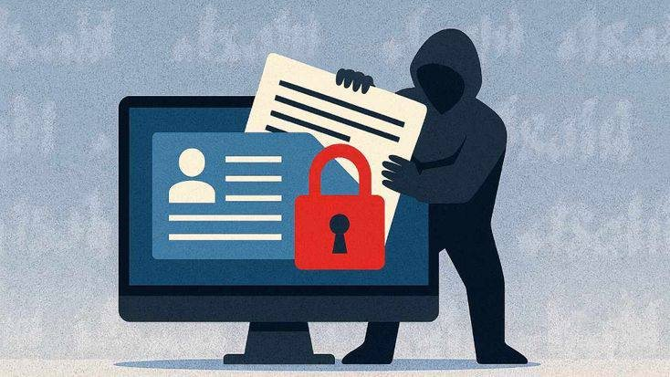

Wyobraź sobie, że dostajesz e-mail z serwisu, z którego regularnie korzystasz. Kilka dni później zauważasz nietypowe wiadomości i alerty logowania.
Firma ogłasza, że doszło do wycieku danych. Część informacji o klientach mogła zostać ujawniona, a przestępcy mogą próbować wykorzystać je w wiadomościach phishingowych albo do przejmowania kont.
Wyciek nie jest twoją winą, ale nadal możesz zrobić kilka rzeczy, żeby się chronić.

02 · Wyjaśnienie
Czym jestwyciek danych?
Do wycieku danych dochodzi, gdy informacje zostają bez upoważnienia odczytane, ujawnione, zmienione, utracone lub skradzione. Może to dotyczyć firm, szkół, instytucji publicznych i osób prywatnych.
Ujawnione dane mogą obejmować imiona i nazwiska, adresy e-mail, numery telefonów, hasła, dane finansowe lub prywatne dokumenty. Wycieki wynikają z cyberataków, słabych zabezpieczeń, błędów albo zgubionych urządzeń.
Dlaczego wyciek danych jest groźny?
Przestępcy mogą wykorzystać ujawnione dane, żeby się pod ciebie podszyć.
Skradzione hasła narażają inne konta, zwłaszcza gdy hasła się powtarzają.
Dane osobowe mogą posłużyć do celowanego phishingu albo kradzieży tożsamości.
Wyciek może oznaczać straty finansowe, stres i utratę prywatności.
Jak się chronić
Używaj silnych, unikalnych haseł do każdego ważnego konta.
Włącz uwierzytelnianie wieloskładnikowe (MFA/2FA), zwłaszcza dla poczty i bankowości.
Aktualizuj system operacyjny, aplikacje i przeglądarkę.
Uważaj na nieoczekiwane wiadomości, linki i załączniki.
Jeśli serwis informuje o wycieku, postępuj zgodnie z jego oficjalnymi zaleceniami i zmień hasła, których dotyczy wyciek lub które się powtarzają.
Sprawdzaj aktywność na koncie i włącz powiadomienia o logowaniu, jeśli są dostępne.
Jeśli mogły wyciec dane finansowe, skontaktuj się z bankiem oficjalnym kanałem.
03 · Co zrobić
Gdy twoje danemogły wyciec.
Działaj w tej kolejności
Zacznij od konta, którego dotyczy wyciek. Zmień hasło na prawdziwej stronie lub w aplikacji i zmień je też wszędzie tam, gdzie używasz tego samego hasła.
Nie ufaj kolejnym wiadomościom tylko dlatego, że wspominają o wycieku – przestępcy mogą wykorzystać tę informację, żeby wysyłać fałszywe linki „wsparcia”.
Jeśli w grę wchodzą pieniądze lub dane płatnicze, natychmiast skontaktuj się z bankiem.
04 · Praktyczny przewodnik
Have IBeen Pwned?
Have I Been Pwned (HIBP) to strona, na której sprawdzisz, czy twój adres e-mail pojawił się w wyciekach danych zebranych w jej bazie.
Pomaga ocenić, czy konto może być zagrożone i co zrobić dalej. Nie dowodzi, że konto zostało właśnie przejęte, i nie gwarantuje, że adres nigdy nie wyciekł.
Samodzielnie wpisz haveibeenpwned.com w przeglądarce. Zanim przejdziesz dalej, sprawdź pisownię.
Znajdź pole wyszukiwania
Na stronie głównej znajdziesz pole do sprawdzenia, czy adres e-mail był w wycieku.
Wpisz adres, który możesz sprawdzić
Użyj własnego adresu albo poproś właściciela o zgodę. Nie wpisuj cudzego e-maila bez pozwolenia.
Kliknij „Check”
Strona przeszuka znane wycieki i pokaże wynik.
Uważnie przeczytaj wynik
Jeśli znaleziono wyciek, sprawdź jego nazwę, datę i rodzaje ujawnionych danych.
Zadbaj o ochronę
Skorzystaj z listy kontrolnej poniżej, zwłaszcza jeśli mogły wyciec hasła lub inne poufne dane.
Wynik
Co oznacza
Co zrobić
Znaleziono wyciek
Adres występuje w co najmniej jednym wycieku w bazie HIBP. Zakres ujawnionych danych zależy od incydentu.
Przeczytaj szczegóły. Zmień hasła, których to dotyczy lub które się powtarzają, włącz uwierzytelnianie wieloskładnikowe i uważaj na celowany phishing.
Nie znaleziono wycieku
W chwili wyszukiwania baza nie zawierała pasującego wycieku. To nie dowód, że adres nigdy nie wyciekł.
Nadal używaj silnych, unikalnych haseł i MFA. Zwracaj uwagę na podejrzaną aktywność.
Wskazówka dotycząca prywatności: sprawdzaj tylko adresy, które należą do ciebie albo na które masz zgodę. Nie publikuj zrzutów ekranu z pełnymi adresami e-mail, hasłami, kodami odzyskiwania ani innymi danymi osobowymi.
Twoje dane. Twoja tożsamość. Twoja przyszłość.Bądź na bieżąco. Bądź czujny. Miej wszystko pod kontrolą.
Obejrzyj
Wycieki danychw minutę.
Krótki film udostępniony przez zespół (po angielsku). Źródło: TikTok (@cybersecurityunlocked)
Wygenerowane przez AI
Treści przygotowane przez uczestników podczas szkolenia w Poroninie, październik 2026.
Czas na grę
Dwa kłamstwa,jeden fakt.
Które zdanie jest prawdziwe? Dotknij karty.
Poprawna odpowiedź: zdanie C. „Matka wszystkich wycieków” (MOAB), odkryta w styczniu 2024 roku, była ogromnym zbiorem około 26 miliardów rekordów z tysięcy wcześniejszych wycieków. A nawet jeśli wyciek nie jest twoją winą, nadal możesz się chronić: zmienić hasła, włączyć 2FA i uważać na phishing.